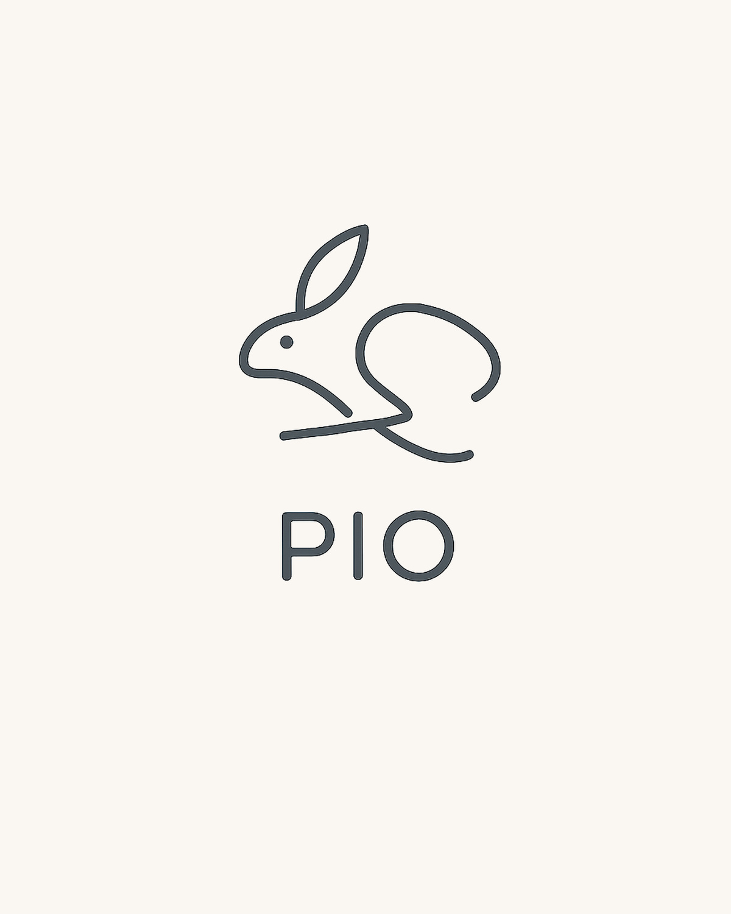

居宅介護支援事業所
「ピオ」
「ピオ」は、介護保険サービスを通じて、ご自宅で安心して暮らせるよう支援します。 ご本人とご家族の状況・ご希望に合わせ、関係機関と連携しながら、必要なサービスを一緒に考えてまいります。

支援する内容
ご利用者様が安心してサービスをご利用いただけるよう、専門職として丁寧に支援します。
Service 01
ケアプランの作成
ご利用者様のご希望や生活状況に合わせて、必要な介護保険サービスを一緒に考え、 適切にご利用いただけるよう居宅サービス計画を作成・ご案内いたします。
Service 02
サービス事業者との連絡・調整
訪問介護、デイサービス、福祉用具など、関係する各事業者との連絡・調整を行い、 円滑にサービスをご利用いただけるよう支援します。
Service 03
定期的な見直し
ご利用中のサービスがご本人の状況に合っているかを定期的に確認し、 必要に応じて内容の見直しや改善のご提案を行ってまいります。
Service 04
関係機関との連携
医療機関や介護サービス事業所など、関係する各機関との連絡・調整を行い、 ご利用者様を支える円滑な支援体制を整えてまいります。
居宅介護支援の
ご利用の流れ
まずはお電話や窓口にて、お気軽にご相談ください。 現在の状況やお困りごとを伺い、必要な支援について一緒に考えていきます。
Step 01
お問い合わせ
お電話・FAX・メールから、お気軽にご相談ください。
Step 02
アセスメント
ご本人の状況、ご家族のご希望を丁寧に聞き取り、必要な支援を整理します。
Step 03
ケアプラン作成
ご本人に合わせたサービス計画を作成し、ご納得いただいたうえで契約となります。
Step 04
サービス開始・継続支援
サービス開始後も状況に応じて見直し、継続して支援を続けます。
事業所情報
-
事業所名
居宅介護支援事業所
「ピオ」 - 介護保険指定番号 No. 1176001558
- 運営 シノテクス株式会社
-
届出住所
〒350-0214
埼玉県坂戸市千代田1-1-29
第5武井ビル202 -
活動拠点
ワークスペース入間
〒358-0023
埼玉県入間市扇台6-3-33
エクセル扇台203 - 受付時間 平日 8:30 – 17:30
-
TEL / FAX
TEL 049-292-9661
FAX 049-292-9662
ピオは、坂戸市・入間市を中心とした埼玉県西部地域の皆様にケアマネジメントサービスを提供しています。法人本部および介護保険上の届出住所は坂戸市にございますが、ご利用者様により身近に、より丁寧にサービスをお届けするため、入間市にもケアマネジャーの活動拠点「ワークスペース入間」を構えています。ご相談・お問い合わせは、お電話でお気軽にどうぞ。
ケアプランのご相談、
承ります。
介護保険サービスのご利用がはじめての方も、ケアマネジャーの変更をご検討の方も、お気軽にご相談ください。
ご家族・病院・施設のご担当者様からのお問い合わせもお待ちしております。